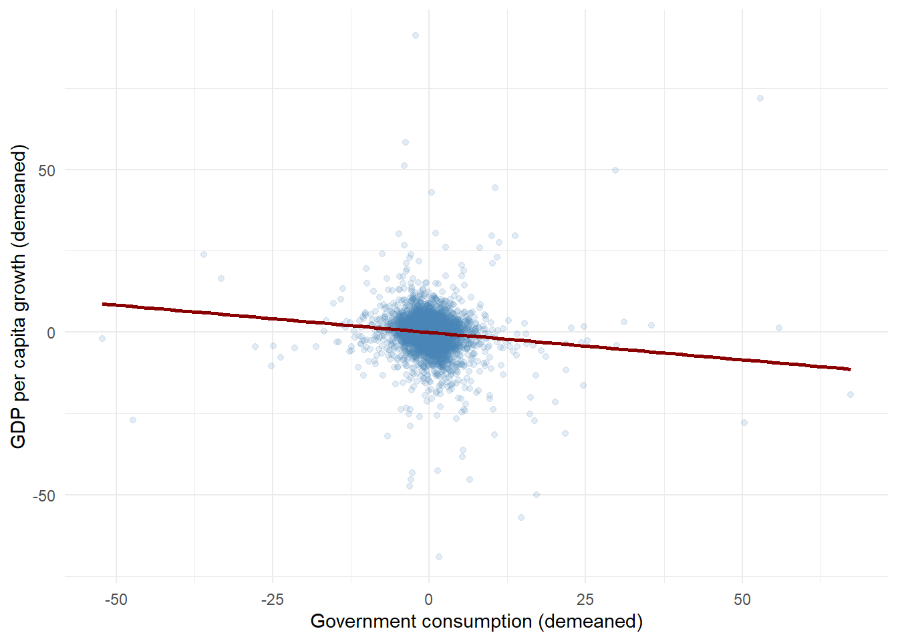

12Real Data Case 2: Government Consumption and Economic Growth
12.1 Introduction
Government spending plays a central role in macroeconomic policy. While higher public consumption may stabilize the business cycle and provide essential public services, it may also crowd out private investment and reduce long-run economic growth. This case study examines the empirical relationship between government consumption and economic growth using a macroeconomic panel dataset covering a large number of countries over several decades. The goal is to demonstrate the use of fixed effects panel regression to control for unobserved heterogeneity across countries and common global shocks over time.
12.2 Research Question
Does higher government consumption as a share of GDP correlate with lower economic growth once country and year fixed effects are taken into account?
country iso2c year growth
Length:6343 Length:6343 Min. :1990 Min. :-64.4236
Class :character Class :character 1st Qu.:1999 1st Qu.: 0.0821
Mode :character Mode :character Median :2007 Median : 2.1955
Mean :2007 Mean : 1.9950
3rd Qu.:2015 3rd Qu.: 4.2941
Max. :2022 Max. : 91.7814
govexp
Min. : 2.014
1st Qu.: 11.842
Median : 15.653
Mean : 16.656
3rd Qu.: 19.453
Max. :147.735
Code
library(ggplot2)
12.4 Data Description
The dataset is constructed from the World Development Indicators (WDI) and contains annual observations for many countries over the period 1990–2022. ### Key Variables - Economic growth: annual growth rate of real GDP per capita (%) - Government consumption: general government final consumption expenditure as a percentage of GDP Observations with missing values in the main variables are excluded. Global aggregates and artificial regions are removed from the sample.
12.5 Empirical Strategy
We estimate the following fixed effects panel regression model: \[
\text{Growth}_{it}
= \beta \cdot \text{GovExp}_{it}
+ \alpha_i
+ \gamma_t
+ \varepsilon_{it}
\] where: - ( _i ) are country fixed effects - ( _t ) are year fixed effects Standard errors are clustered at the country level. This specification controls for time-invariant country characteristics (such as geography, institutions, or long-run development levels) as well as common global shocks affecting all countries in a given year.
12.6 Visual Evidence
Code
df_within <- df |>group_by(country) |>mutate(growth_dm = growth -mean(growth, na.rm =TRUE),govexp_dm = govexp -mean(govexp, na.rm =TRUE) ) |>ungroup()ggplot(df_within, aes(govexp_dm, growth_dm)) +geom_point(alpha =0.15, color ="steelblue") +geom_smooth(method ="lm", se =FALSE, color ="darkred") +labs(x ="Government consumption (demeaned)",y ="GDP per capita growth (demeaned)" ) +theme_minimal()

Figure 12.1: Within-country relationship between government consumption and economic growth
Using lagged government consumption yields a coefficient of similar sign but smaller magnitude. This suggests that the negative association is not driven solely by contemporaneous reverse causality, although the estimate remains statistically imprecise. Overall, the qualitative conclusions of the baseline specification are unchanged.
12.9 Results
Quantitatively, the point estimate implies that a one‑percentage‑point increase in government consumption (as a share of GDP) is associated with approximately a 0.12 percentage point lower GDP per capita growth rate within a country. The estimate is not statistically significant at conventional levels, so the magnitude should be interpreted cautiously.
The estimated coefficient on government consumption captures the within-country association between changes in government consumption and changes in economic growth, net of global time effects. A negative coefficient suggests that increases in government consumption are associated with lower growth rates within countries over time, although statistical significance must be carefully evaluated. Clustering standard errors at the country level accounts for serial correlation and heteroskedasticity within countries.
12.10 Interpretation and Caveats
It is important to emphasize that this analysis identifies correlation, not causation. Potential concerns include:
reverse causality (growth downturns may raise government spending)
omitted time-varying country-specific factors
measurement error in macroeconomic aggregates
Nevertheless, the fixed effects framework provides a useful baseline for understanding empirical patterns in cross-country panel data.
12.11 Concluding Remarks
This case study illustrates how fixed effects panel models can be used to study macroeconomic relationships using multi-country data.
By controlling for country and year fixed effects, the analysis isolates within-country variation and highlights how accounting for unobserved heterogeneity can substantially alter naive cross-sectional relationships. While the results do not support a statistically significant association between government consumption and economic growth, the exercise demonstrates a clean and reproducible workflow for applied macroeconometric analysis using real-world data.